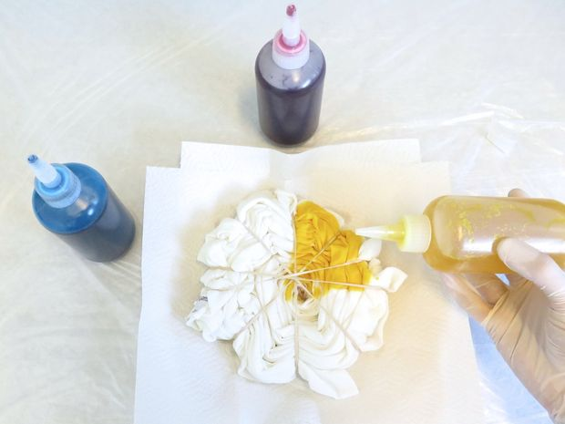

How to Tie Dye an Old White Shirt
Materials:
- Borax
- Water
- Rubber Bands
- Rubber Gloves
- Squeeze Bottles
- Soda Ash
- Large Ziplock Bags
- Tub
- Wooden Dowel/Rod
- Mix the soda ash with warm water in the tub. Then soak the shirt in this mixture for 10 minutes.
- Wring out the shirt and lay it down flat. Now put the wooden dowel on the middle of the back of the shirt. Turn the shirt until it is at a pie like shape.
- Put multiple rubber bands on the shirt while maintaining its flat pie shape.
- Put on your Rubber Gloves it will get quite messy in the next few steps.
- Now simply put the Procion Dye over certain parts of the shirt. The more colors you use, the better the final product. 
- Now flip the shirt over and repeat step 5.
- Put the shirt in a Ziplock Bag and wait for 24 hours. Once you take the shirt out and remove the rubber bands, you should have a tie dye shirt!

Designers: Revan Aleti, Aditya Tewary, Pranav Pitchala, Rishab Nathan
Contact: diysky@gmail.com
Theme: DIY | Metea Valley High School BPA | Aurora, Illinois | 2016-17